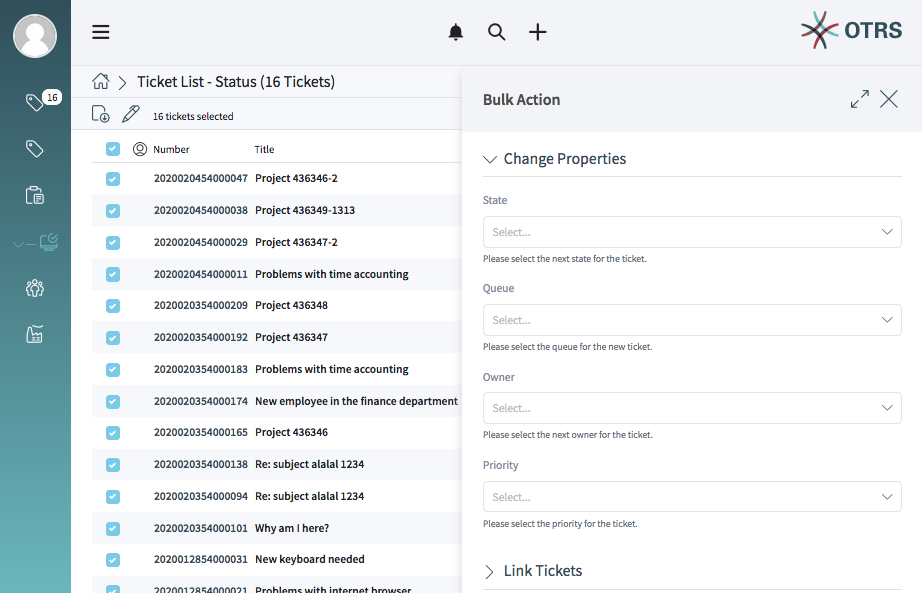
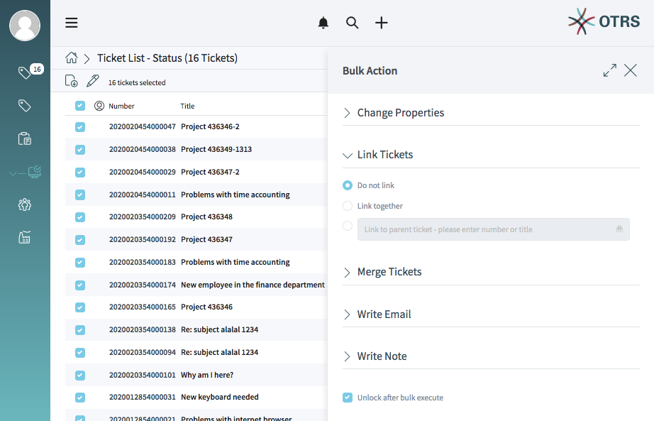
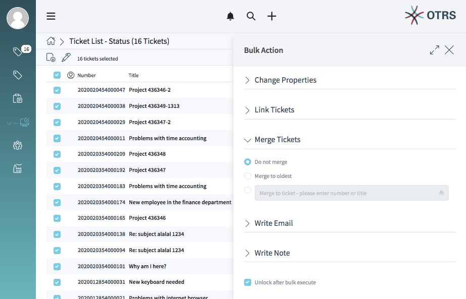
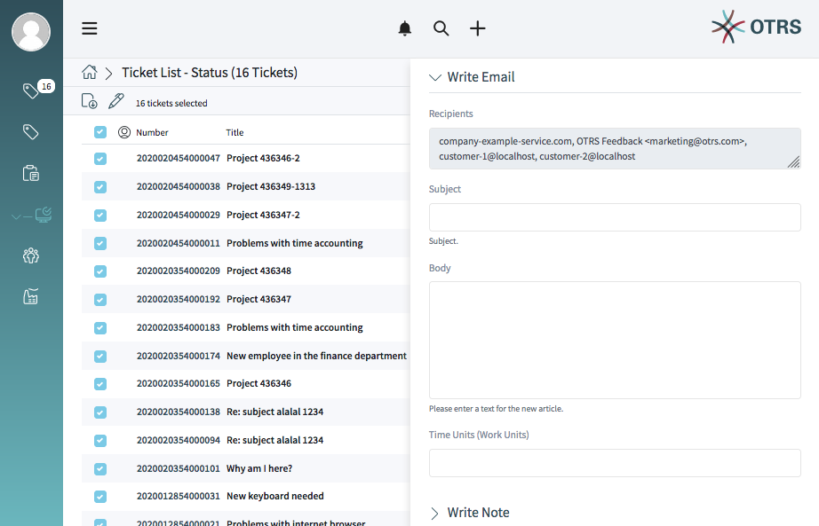
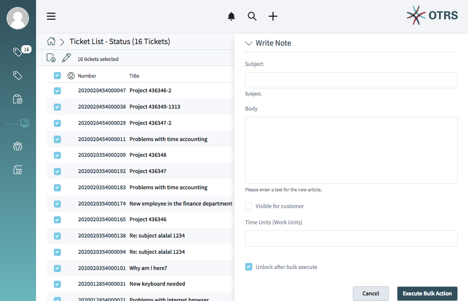

Tickets¶
Agents can communicate with customer users via email, phone or SMS, and agents can communicate with other agents via note. Additionally, it is possible to start processes, which can affect both agents and customer users.
The communication is managed with using tickets. This means, OTRS will convert any type of communications into tickets, and it will add the messages as articles to the ticket.
Create Ticket¶
When agents start the communication, they can create email tickets, phone tickets, process ticket or SMS tickets. All the communication result a ticket, and the first message is added to the ticket as an article.
- Email Ticket
- Email ticket is used to send an email to the customer user or to other recipients, when the ticket is created.
- Phone Ticket
- Phone ticket is used to record the information during a phone call with the customer user. When the ticket is created, no email will be sent to the customer user. The ticket is treated as it was originally created by the customer user.
- Process Ticket
- Creating a process ticket will start a defined process. The agents and the customer users have to follow the steps, that is provided by the process. Any message created during a process ticket will create new articles to this ticket.
- SMS Ticket
- SMS ticket is used create a ticket and send the first article via SMS to the customer user. SMS ticket has a limited body to fit the text to the restriction of the SMS.
The following sections explain, how can an agent create a new request in the agent interface for the customer user. Creating email tickets, phone tickets and SMS ticket are almost the same, so the following sections will describe the ticket creation in a general manner.
Properties Widget¶
This widget is used to create the request for the customer user. This widget consists of four sections: Customer, Assignment, Service Level Management and Communication.
- Customer
In this section can be selected the customer user, who the new ticket is created for. The customer user can be selected by typing the name into the field, or by using the customer address book next to the field. Using the wildcard character * is possible to search for the customer user.

Select Customer User
The Customer field is read only, and it will be auto-populated with the customer of the selected customer user.
- Assignment
In this section can be selected the Queue and the Owner of the ticket. The queue selection is mandatory.

Queue And Owner Selection
- Service Level Management
In this section can be selected the priority and the next ticket state.

Priority And State Selection
- Communication
In this section can be written the message like in an email client.

Write The Message
This section is different for phone tickets and email tickets.
For phone tickets, the From field is available and mandatory, because a phone ticket is treated as it is created by the customer user. The To field is the queue selected in the previous section.
For email tickets, this section works a normal email client. It has To, Cc and Bcc fields for the recipients.
It is possible to select a text template for the new ticket. The content of the template will overwrite the existing texts.
The Subject, Body, Attachments and Time Units fields are the same for both the phone ticket and the email ticket.
Signature is only applied for the email tickets.
It the widget configuration of this widget it is possible to set whether the next screen is after creation of a ticket is the create screen again or the detail view of the created ticket.
Customer Information Widget¶
This widget displays detailed information about the selected customer user and about its customer.

Customer Information Widget
Customer User History Widget¶
This widget shows the tickets for the customer user selected above.

Customer User History Widget
Customer History Widget¶
This widget shows the tickets for the customer selected above.

Customer History Widget
Ticket List¶
The ticket list shows tickets based on the configuration. This list type supports the pulse mode.
Note
The shown data depends on the permissions.
Active Ticket List Default
The screen configuration of this list allows to define up to three sorting criteria (multi level sorting).
Clicking an item in the list opens the detail view of the ticket.
The items of the list can be exported.
For actions on more then one item the bulk action supports changes on multiple items.
Ticket List Actions¶
- Change Properties
In this section the following ticket properties can be changed for the selected tickets:
- State
- Queue
- Owner
- Priority
After clicking Execute Bulk Action the selected bulk action(s) will be performed. The affected items are highlighted in the ticket list for a short time.
- Link Tickets
In this section the selected tickets can be linked together or with a parent ticket.
Bulk Action - Link Tickets
The search field allows to search for a ticket by ticket number or title. Typing at least three numbers or characters opens a list of found items.
Linked tickets are shown in the widget Linked Tickets in the ticket detail view.
- Merge Tickets
In this section the selected tickets can be merged to the oldest one of the selected tickets or to a certain ticket number.
Warning
The merging of tickets can not be undone.
Bulk Action - Merge Tickets
The search field allows to search for a ticket by ticket number or title. Typing at least three numbers or characters opens a list of found items.
- Write Email
In this section, an e-mail message can be created for the selected tickets.
Bulk Action - Write Email
The recipients field contain all recipients of each single ticket.
- Write Note
In this section a note can be added to the selected tickets.
Bulk Action - Write Note
If the checkbox Visible for customer is checked, the note will be visible for customers in the external interface.
Note
After executing the bulk action the ticket are automatically unlocked. To prevent this, the checkbox Unlock after bulk execute needs to be unchecked. In this case the affected tickets remain locked.
Ticket List Bulk Action¶
Ticket List Bulk Action Symbol
For ticket lists the pen symbol at the top of the list opens the screen for the bulk action.
Performing a bulk action for tickets means, that these tickets will be automatically locked to the agent while performing the bulk action.
This needs to be confirmed first by clicking Lock and Continue.
Ticket List Bulk Action Lock Confirmation
After confirmation the options for the bulk action are shown.
Note
If there are missing permissions for locking tickets a message is shown where the items are listed that can not be locked. It is possible to continue with the bulk action, but the listed items will not be affected.
Ticket List Bulk Action
Watching Tickets¶
TODO
Note
The ticket watch feature is deactivated by default and needs to be activated first by a system administrator in order to use it.
Ticket Detail View¶
Sidebar¶
The sidebar offers the possibility to see who is involved in the ticket, watches it and who is owner/responsible for the ticket.

Sidebar
Involved in the Ticket (Pencil symbol) means that this agent has done a action on the ticket e.g. changing properties or writing articles to customers.
Watch (Eye symbol) means that this agent watches this ticket.
Light green circled avatar = Responsible Dark green circled avatar = Owner
Ticket Detail View Widgets¶
- Communication Compact Widget
This widget shows all articles of the ticket in a table.
This widget supports Widget Filter and Widget Configuration.

Communication Compact Widget
Articles in the communication of a ticket can come from different channels. The column Channel informs about the channel of the according article.
The column with the arrows on both sides informs about the direction of the article. Possible values are here:
- Incoming
- Outgoing
- Internal
The column with the information symbol shows additional article information e.g. if the article is marked as important.
Clicking an article in the table expands the article. Clicking the Expand all button at the top of the widget expands all articles.

Communication Compact Widget Expanded Article
The icons at the article in the expanded view allow actions like reply or forward. The article menu symbol opens further actions e.g. printing the article or splitting the article.
- Communication Stream Widget
This widget shows the articles of a ticket in a different form than in the widget Communication Compact. The articles are displayed as symbolic speech bubbles next to the authors’ avatars with the topic and the abbreviated content of the article.
This widget supports Widget Filter and Widget Configuration.

Communication Stream Widget
The article direction is represented by the avatars of each side. The left side avatars represent the incomming articles. The avatars at the right side represent the outgoing articles. The symbols near the avatars represent the channel of the article.
Clicking an article expands the article. The icons at the article in the expanded view allow actions like reply or forward. The article menu symbol opens further actions e.g. printing the article or splitting the article.
- Properties Widget
This widget shows the properties of the ticket. The properties are presented as small cards within the widget.
This widget supports Widget Configuration.

Properties Widget
Most of the cards have a pen symbol in the right corner. Clicking this symbol allows to directly edit the property.
- Linked Tickets Widget
This widget shows linked tickets presented in a list.
This widget supports Widget Filter and Widget Configuration.

Linked Tickets Widget
The Unlink column allows to directly unlink a ticket.
- Customer Information Widget
This widget shows information about customer and customer users presented in cards.
This widget supports Widget Configuration.
Customer Information Widget
The customer card shows the number of open and closed tickets of the customer. The Action section contains icons to directly edit the customer. The section Social contains links to the social channels of the customer.
The customer user card shows the number of open and closed tickets of the customer user. The Create section contains icons to directly create a new customer user. The Action section contains icons to directly edit the customer user and to login as customer user. The section Social contains links to the social channels of the customer user.
- Attachments Widget
- TODO
- Linked Knowledge Base Articles Widget
This widget shows linked knowledge base articles.
This widget supports Widget Filter and Widget Configuration.

Linked Knowledge Base Articles Widget
The Unlink column allows to directly unlink a ticket.
- Drafts
This widget shows all defined drafts in a list. Clicking on an item in the list opens the according draft.
This widget supports Widget Configuration.

Drafts Widget
The Delete column allows to directly delete a draft.
Ticket Detail View Actions¶
- Note
This ticket action allows to create a note for ticket. Notes are by default only shown to agents. The note is added as article to the ticket.

Ticket Action Note
If the checkbox Is visible for customer is checked the note will be visible for customers in the external interface.
The fields Subject and Body are mandatory. The field Attachments allows to add attachments to the note. The field Time Units can be used to input times.
If the checkbox Mark as important is checked the note will be marked as important. The note will be shown in the Communication Compact widget with a special icon showing that this article is important.
- Phone Call Outbound
This ticket action allows to add a note to the ticket based on an outgoing phone call.

Ticket Action Phone Outbound
- Phone Call Inbound
This ticket action allows to add a note to the ticket based on an incoming phone call.

Ticket Action Phone Inbound
- E-Mail Outbound
This ticket action allows to send an email and add the email as article to the ticket.

Ticket Action E-mail Outbound
- SMS Outbound
This ticket action allows to send an SMS and add the SMS as article to the ticket.
Note
Additional contract is needed to use this action.

Ticket Action SMS Outbound
- Free Fields
This ticket action allows to change the free field values of the ticket.

Ticket Action Free Fields
- This ticket action allows to print the ticket.
- Close
This ticket action allows to close the ticket.

Ticket Action Close
- Link
This ticket action allows to link the ticket with other tickets or knowledge base articles.

Ticket Action Link
The filter sections allows to filter for tickets or knowledge base articles. For tickets the filters Number and Title are set as default filter fields. For knowledge base articles the filters Category and Knowledge base article number are set as default filters.
This section has the same function as the filter sections for business object list and allows defining more filters and save these as filter presets.
The objects can be linked as Normal , Child or Parent.
- Pending
This ticket action allows to set a pending reminder or a pending auto close for the ticket.

Ticket Action Pending
- Priority
This ticket action allows to change the priority of the ticket.

Ticket Action Priority
- Owner
This ticket action allows to change the owner of the ticket.

Ticket Action Owner
- History
This ticket action allows to view the history of the ticket.

Ticket Action History
- Merge
- This ticket action allows to merge the current ticket to another ticket.
- Lock
- This ticket actions locks the ticket to agent.
- Watch/Unwatch
- This ticket action sets the ticket to watch or unwatch status.
Article Actions¶
- Reply
This article action allows to reply to the article. If the checkbox Is visible for customer is checked the article will be visible for customers in the external interface.
The fields Subject and Body are mandatory. The field Attachments allows to add attachments to the note. The field Time Units can be used to input times.
If the checkbox Mark as important is checked the note will be marked as important.
- Reply all
This article action allows to reply all recipients to the article. If the checkbox Is visible for customer is checked the article will be visible for customers in the external interface.
The fields Subject and Body are mandatory. The field Attachments allows to add attachments to the note. The field Time Units can be used to input times.
If the checkbox Mark as important is checked the note will be marked as important.
- Reply via SMS
This article action allows to reply to the article as SMS message. If the checkbox Is visible for customer is checked the article will be visible for customers in the external interface.
Note
Additional contract is needed to use this action.
The fields Subject and Body are mandatory. The field Attachments allows to add attachments to the note. The field Time Units can be used to input times.
The checkbox Flash message can be used to display the sms directly and without user interaction. (depends on the used device and provider)
If the checkbox Mark as important is checked the note will be marked as important.
- Forward
This article action allows to forward the article as email. If the checkbox Is visible for customer is checked the article will be visible for customers in the external interface.
The fields Subject and Body are mandatory. The field Attachments allows to add attachments to the note. The field Time Units can be used to input times.
If the checkbox Mark as important is checked the note will be marked as important.
- Redirect
This article action allows to redirect the article as email. The checkbox Inform original sender is checked by default.
The fields Subject and Body are mandatory.
- Mark as Important
- This article action marks the article as important. Articles marked as important are highlighted in the article overviews.
- Split
This article action allows to split the article to an other ticket. The agent can split the article to phone, email or process ticket.
Possible link types are:
- Parent
- Child
- Normal
- This article action allows to print the article.